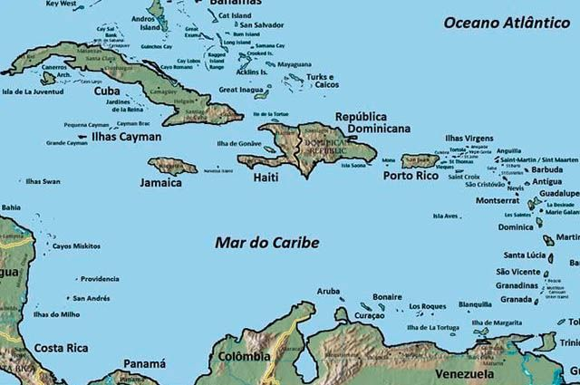

Bem vindo
1.Primeiro vamos apresentar as curiosidades do caribe
- As Ilhas caribenhas tiveram diferentes colonizações, como em todo o “Novo Mundo”. A língua predominante é o Espanhol, mas algumas Ilhas pertencem à França e ao Reino Unido, logo, falam o idioma da metrópole. Com ocorrências menores, o holandês também é presente entre as línguas.
- Existem ilhas no Caribe que não são independentes. As ilhas que pertencem à França são o Arquipélago de Guadalupe (composto por 6 ilhas), as ilhas de São Bartolomeu e São Marinho. Os Estados Unidos possuem duas ilhas como extensão de seu território, são elas Porto Rico e ilhas Virgens. A Coroa Britânica também possui Ilhas na região, as chamadas Ilhas Virgens Britânicas, Monressate, ilhas Caimão, ilhas Turcas e Caicos e as Bermudas, sendo assim, o Reino Unido é o país com mais porção de terra na região.
Idioma
Ilhas colônias
2.Agora vamos ver o mapa
3.Vamos conhecer as praias
Maho Beach
Uma das praias do Caribe que mais impressiona aos visitantes porque fica localizada bem próximo do Aeroporto Princess Juliana (SXM) em Sint Maarten, lado holandês da ilha. Para quem busca uma praia exótica, ela cumpre muito bem o seu papel, já que enquanto está no mar você pode ver enormes aviões pousando e decolando do aeroporto e admirar as aeronaves passando a poucos metros de distância. Não é exatamente uma praia para descansar sossegado, mas é com certeza uma experiência inesquecível!
Shell Beach
Localizada na região central de St Barth, uma das ilhas mais luxuosas do Caribe, Shell Beach leva o nome de uma das características marcantes dessa pequena praia: ela é toda coberta por conchas, com os mais variados formatos e cores.
Kenepa Grandi
Localizada na ilha de Curaçao, Kenepa Grandi é uma praia com pouca estrutura, mas beleza estonteante. Seu trecho de areia é pequeno e seu mar parece como o de uma piscina. Logo ao chegar na praia você se depara com um mirante, que mesmo sem ser muito alto oferece uma vista panorâmica incrível do lugar e de suas águas, que variam em tons de verde e azul. É um ótimo lugar para praticar snorkeling ou simplesmente para observar a paisagem, que é uma das mais bonitas da ilha colonizada por holandeses.
Tulun
Na região da Riviera Maia, é uma praia especial em diversos aspectos. Ela possui um sítio arqueológico construído pela civilização maia na beira do mar e tem uma praia de coloração azul, belíssima. É um lugar muito diferente, que chama a atenção não apenas pelas características naturais da praia, mas também por seu lado histórico, que é de grande importância para essa região.